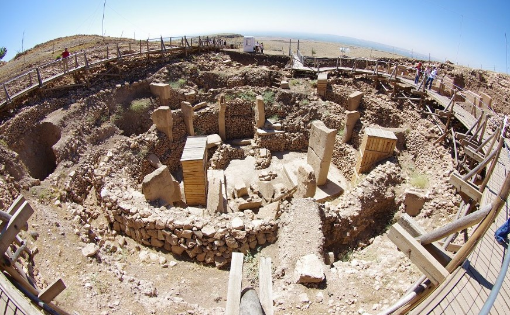
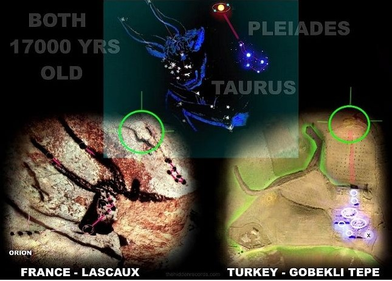

옛 사람들의 별별 이야기
이집트의 천문기록은 가장 오래된 것으로 추측되는데, 이곳에서 시리우스 신앙이 나온다.
고대 이집트에서는 이 별을 소프데트 라는 이름으로 불렀는데, 이집트 중왕국에서는 시리우스를 나일강의 범람을 알려주는 중요한 별로 여겼다.
고대 이집트의 하늘에서 시리우스는 약 70일간 보이지 않다가 강물이 범람하는 여름 직전 동쪽에서 떠오르고 이내 같이 떠오는 태양빛에 의해 사라지는데,
고대 이집트 인들은 이 시기를 기준으로 일년을 결정하였다.
이집트인은 시리우스(소프데트)의 상형문자를 별 하나에 삼각형 하나로 표시했다. 소프데트는 남편 오시리스, 아들 호루스와 함께 삼위일체를 이루는 이시스 여신과 밀접한 관련이 있다. 이집트인은 하늘에 시리우스가 보이지 않는 70일이 이시스와 오시리스가 두아트(이집트인이 믿던 사후세계)를 통과하는 기간이라고 믿었다.
즉, 고대 이집트인들에게 있어 시리우스라는 별의 존재는 일년이 지남을 알려주는 별임과 동시에, 나일강이 범람할 때를 알려줌으로써 고대 이집트인들의 생활사에 빼놓을 수 없는 별이 된것이다.
하지만 비교적 최근인 2010년 즈음 새로운 고대의 유적이 발견되면서 어쩌면 최초의 별 신앙은 이집트에서 시작하지 않았을 가능성이 생겼다.
그 주인공은 바로 튀르키예의 괴베클리 테페라는 유적인데, 무려 1만 1700년전 세워진것으로 추정되는 유적이다.
이 유적에서는 황소자리의 플레이아데스 성단으로 추정되는 그림이 그려져 있는데, 당시 지구의 세차운동을 생각하면, 이 별자리들은 북반구에서 막 보이기 시작했을 별들로 추정된다.
일부 학자들은 당시 혜성으로 인한 유성우가 극대에 달해 유성우가 마치 비처럼 쏟아지는 현상이 발생하여 고대인들이 이런 유적을 세웠을거라는 추측을 내세웠다.
이 때에 극대에 달한 유성우는 현대에서 생각하는 시간당 수십개의 유성우가 떨어지는 것이 아닌, 시간당 수백~수천개 이상의 유성우가 떨어지는 장관을 이루엇을 것이라 추측되는데
실제로 1833년 미국에서는 시간당 15만개의 유성우가 떨어지면서 세상이 불길에 휩싸였다는 기록이 있을 정도로 대 유성우는 압도적인 경외감을 우리에게 주게 된다.

위에서 나온 그림은 1833년 미국의 유성우를 그린 사진이다.
하늘을 수놓는 별무리의 집합은 당시 지식이 부족한 고대인들에게 있어서 엄청난 경외감을 불러 일으켯을 것이고,
이 경외감을 표시하기 위해 당시 수렵사회였던 고대 인류들이 같이 모여 제사를 지내는 장소를 만들었을 것이란 추측이다.